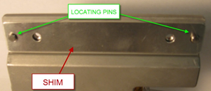
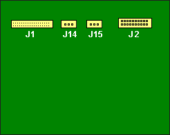

Installing Reagent Pipettors
The procedure describes how to install the reagent pipettor.
Install the reagent pipettor when a reagent pipettor has been removed for repair or replacement.
Note: Reagent pipettors must be removed in sets because of the design of the module. Pipettors 1 and 2 are a set, and pipettors 3 and 4 are a set.
Note: DxI 600 instruments do not have pipettors 3 and 4 installed.
-
Prepare the instrument.
- Open the upper left and right front covers.
- Remove power from the motors by using the switch on the Power Distribution PCB labeled "All DC power (except CPU and reagent coolers)".
-
Install the reagent pipettors.
Note: If installing a linear slide (Y axis) pipettor, install the tower shim before mounting the gantry.

-
Move the pipettor carriage all the way to the front of the pipettor. Slide the pipettor into the instrument so that the back plate clears the tower.
The carriage might be secured with a tie-wrap at the front of the reagent pipettor.
- Mount the gantry onto the locating pins, and then tighten the two screws that hold the gantry to the tower.
- Remove any tie-wrap.
- Reconnect the pipettor supply tubing connectors at the precision pumps for the appropriate pipettors.
-
Reconnect these connectors to the appropriate reagent pipettor interface PCB.
Note: The interface PCB for either pair of reagent pipettors is identical in layout.

- J1 - Ribbon Cable
- J2 - Reagent Pipettor Motor
- J14 - Ultrasonics Cable
- J15 - Ultrasonics Cable
- Insert the interlock bypass.
- Restore power to the motors by using the switch on the Power Distribution PCB labeled "All DC power (except CPU and reagent coolers)".
- Initialize the instrument.
-
Move the pipettor carriage all the way to the front of the pipettor. Slide the pipettor into the instrument so that the back plate clears the tower.
-
Verify the proper operation of the reagent pipettor.
-
If this installation is a new pipettor gantry installation or if any part of the pipettor gantry has been replaced, then adjust the ultrasonics voltage.
Note: Refer to theRP: Adjusting Ultrasonics Transducer Voltage procedure.
-
Confirm the reagent pipettor alignments to all intersecting devices. Align and adjust as needed.
Note: All pipettor z-alignments must be verified by performing a manual alignment.
- Verify that all fluid lines have been reconnected, by priming the reagent pipettor 10 times and monitoring for leaks.
-
Select 100 reps of the dry and wet test to verify the operation of the transducer.
Note: Refer to the Tests: Performing Ultrasonics Level Sense Test procedure.
- Remove interlock bypasses, close the instrument covers, initialize the system (if not ready).
- Perform system checks and verify that all specifications are met.
- Perform QC and verify that customer specifications are met.
-
If this installation is a new pipettor gantry installation or if any part of the pipettor gantry has been replaced, then adjust the ultrasonics voltage.